가스기사 (2016-03-06 기출문제)
1과목: 가스유체역학
1. 단수가 Z인 다단펌프의 비속도는 다음 중 어느 것에 비례하는가?
- Z0.33
- Z0.75
- Z1.25
- Z1.33
(정답률: 75%)

2. 비압축성 유체의 유량을 일정하게 하고, 관지름을 2배로 하면 유속은 어떻게 되는가? (단, 기타 손실은 무시한다.)
- 1/2로 느려진다.
- 1/4로 느려진다.
- 2배로 빨라진다.
- 4배로 빨라진다.
(정답률: 81%)
3. 유체수송장치의 캐비테이션 방지 대책으로 옳은 것은?
- 펌프의 설치위치를 높인다.
- 펌프의 회전수를 크게 한다.
- 흡입관 지름을 크게 한다.
- 양 흡입을 단 흡입으로 바꾼다.
(정답률: 79%)
4. 등엔트로피 과정은 어떤 과정이라 말 할 수 있나?
- 비가역 등온과정
- 마찰이 있는 가역과정
- 가역 단열 과정
- 비가역적 팽창과정
(정답률: 86%)
5. 모세관 현상에서 액체의 상승높이에 대한 설명으로 옳지 않은 것은?
- 액체의 밀도에 반비례한다.
- 모세관의 지름에 비례한다.
- 표면장력에 비례한다.
- 접촉각에 의존한다.
(정답률: 64%)
6. 원관에서의 레이놀즈 수(Re)에 관련된 변수가 아닌 것은?
- 직경
- 밀도
- 점성계수
- 체적
(정답률: 71%)
7. 다음 그림에서와 같이 관속으로 물이 흐르고 있다. A점과 B점에서의 유속은 몇 m/s인가?
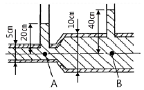
- uA＝2.045, uB＝1.022
- uA＝2.045, uB＝0.511
- uA＝7.919, uB＝1.980
- uA＝3.960, uB＝1.980
(정답률: 74%)
8. 대기의 온도가 일정하다고 가정하고 공중에 높이 떠 있는 고무풍선이 차지하는 부피(a)와 그 풍선이 땅에 내렸을 때의 부피 (b)를 옳게 비교한 것은?
- a는 b보다 크다.
- a와 b는 같다.
- a는 b보다 작다.
- 비교할 수 없다.
(정답률: 81%)
9. 어떤 유체 흐름계를 Buckingham pi 정리에 의하여 차원 해석을 하고자 한다. 계를 구성하는 변수가 7개이고, 이들 변수에 포함된 기본차원이 3개일 때, 몇 개의 독립적인 무차원수가 얻어지는가?
- 2
- 4
- 6
- 10
(정답률: 89%)
10. 내경이 10㎝인 관속을 40㎝/s의 평균속도로 흐르던 물이 그림과 같이 내경이 5㎝인 가지관으로 갈라져 흐를 때, 이 가지관에서의 평균유속은 약 몇 ㎝/s인가?
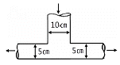
- 20
- 40
- 80
- 160
(정답률: 71%)
11. 다음 중 옳은 것을 모두 고르면?
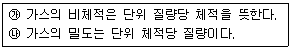
- ㉮
- ㉯
- ㉮, ㉯
- 모두 틀림
(정답률: 82%)
12. 미사일이 공기 중에서 시속 1260km로 날고 있을 때의 마하수는 약 얼마인가? (단, 공기의 기상수 R은 287J/㎏·K, 비열비는 1.4 이며, 공기의 온도는 25℃이다.)
- 0.83
- 0.92
- 1.01
- 1.25
(정답률: 62%)
13. 길이 500m, 내경 50㎝인 파이프 속을 물이 흐를 경우 마찰손실 수두가 10m라면 유속은 얼마인가?(단, 마찰손실계수 λ＝0.02이다.)
- 3.13m/s
- 4.15m/s
- 5.26m/s
- 6.21m/s
(정답률: 61%)
14. 압력 P, 마하수 M, 엔트로피가 S일 때, 수직충격파가 발생한다면 P, M, S는 어떻게 변화하는가?
- M, P는 증가하고 S는 일정
- M 은 감소하고 P, S는 증가
- P, M, S 모두 증가
- P, M, S 모두 감소
(정답률: 80%)
15. 물이 평균속도 4.5m/s로 안지름 100mm인 관을 흐르고 있다. 이 관의 길이 20m에서 손실된 헤드를 실험적으로 측정하였더니 4.8m이었다. 관 마찰계수는?
- 0.0116
- 0.0232
- 0.0464
- 0.2280
(정답률: 76%)
16. 정체온도 Ts, 임계온도 Tc, 비열비를 k라 하면 이들의 관계를 옳게 나타낸 것은?
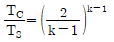
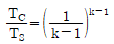
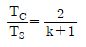
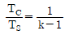
(정답률: 62%)
17. 그림은 회전수가 일정할 경우의 펌프의 특성곡선이다. 효율곡선은 어느 것인가?
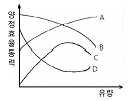
- A
- B
- C
- D
(정답률: 77%)
18. Hagen-poiseuille 식이 적용되는 관내 층류 유동에서 최대속도 Vmax＝6㎝/s일 때 평균 Vavg는 몇 ㎝/s인가?
- 2
- 3
- 4
- 5
(정답률: 85%)
19. 다음 중 비압축성 유체의 흐름에 가장 가까운 것은?
- 달리는 고속열차 주위의 기류
- 초음속으로 나는 비행기 주위의 기류
- 압축기에서의 공기 유동
- 물속을 주행하는 잠수함 주위의 수류
(정답률: 81%)
20. 실린더 안에는 500㎏f/cm2의 압력으로 압축된 액체가 들어있다. 이 액체 0.2m3를 550㎏f/cm2로 압축하니 그 부피가 0.1996m3로 되었다. 이 액체의 체적 탄성계수는 몇 ㎏f/cm2인가?
- 20,000
- 22,500
- 25,000
- 27,500
(정답률: 56%)
2과목: 연소공학
21. 가스가 폭발하기 전 발화 또는 착화가 일어날 수 있는 요인으로 가장 거리가 먼 것은?
- 습도
- 조성
- 압력
- 온도
(정답률: 69%)
22. 기류의 흐름에 소용돌이를 일으켜, 이때 중심부에 생기는 부압에 의해 순환류를 발생시켜 화염을 안정시키려는 수단으로 가장 적당한 것은?
- 보염기
- 선회기
- 대향분류기
- 저유속기
(정답률: 76%)
23. 이상기체에서 “PVk＝일정”의 식이 적용되는 과정은? (단, k는 비열비이다.)
- 등온과정
- 등압과정
- 등적과정
- 단열과정
(정답률: 66%)
24. 폭굉유도거리가 짧아지는 이유가 아닌 것은?
- 관경이 클수록
- 압력이 높을수록
- 점화원의 에너지가 클수록
- 정상연소속도가 큰 혼합가스일수록
(정답률: 74%)
25. 다음의 연소 반응식 중 틀린 것은?
- C3H8＋5O2 → 3CO2＋4H2O
- C3H6＋(7/2)O2 → 3CO2＋3H2O
- C4H10＋(13/2)O2 → 4CO2＋5H2O
- C6H6＋(15/2)O2 → 6CO2＋3H2O
(정답률: 80%)
26. 가스의 폭발에 대한 설명으로 틀린 것은?
- 산소 중에서의 폭발하한계가 아주 낮아진다.
- 혼합가스의 폭발은 르샤트리에의 법칙에 따른다.
- 압력이 상승하거나 온도가 높아지면 가스의 폭발범위는 일반적으로 넓어진다.
- 가스의 화염전파속도가 음속보다 큰 경우에 일어나는 충격파를 폭굉이라고 한다.
(정답률: 64%)
27. 2개의 단열과정과 2개의 정압과정으로 이루어진 가스 터빈의 이상 사이클은?
- 에릭슨 사이클
- 브레이턴 사이클
- 스털링 사이클
- 아트킨슨 사이클
(정답률: 83%)
28. 어떤 연료의 성분이 다음과 같을 때 이론공기량(Nm3/㎏) 은 약 얼마인가?(단, 각 성분의 비는 C : 0.82, H : 0.16, O : 0.02이다.)
- 8.7
- 9.5
- 10.2
- 11.5
(정답률: 47%)
29. 연소기에서 발생할 수 있는 역화를 방지하는 방법에 대한 설명 중 옳지 않은 것은?
- 연료분출구를 적게 한다.
- 버너의 온도를 높게 유지한다.
- 연료의 분출속도를 크게 한다.
- 1차 공기를 착화범위보다 적게 한다.
(정답률: 71%)
30. 안쪽반지름 55㎝, 바깥반지름 90㎝인 구형고압 반응 용기(λ＝41.87W/m·℃) 내외의 표면온도가 각각 551 K, 543 K일 때 열손실은 약 몇 kW인가?
- 6
- 11
- 18
- 29
(정답률: 45%)
31. 가스 안전성평가 기법은 정성적 기법과 정량적 기법으로 구분한다. 정량적 기법이 아닌 것은?
- 결합수 분석(FTA)
- 사건 수 분석(ETA)
- 원인결과 분석(CCA)
- 위험과 운전석(HAZOP)
(정답률: 85%)
32. 폭굉현상에 대한 설명으로 틀린 것은?
- 폭굉한계의 농도는 폭발(연소)한계의 범위 내에 있다.
- 폭굉현상은 혼합가스의 고유 현상이다.
- 오존, NO2, 고압하의 아세틸렌의 경우에도 폭굉을 일으킬 수 있다.
- 폭굉현상은 가연성가스가 어느 조성범위에 있을 때 나타나는데 여기에는 하한계와 항한계가 있다.
(정답률: 67%)
33. 연소의 연쇄반응을 차단하는 방법으로 소화하는 소화의 종류는?
- 억제소화
- 냉각소화
- 제거소화
- 질식소화
(정답률: 63%)
34. 어느 온도에서 A(g)＋B(g) ⇌ C(g)＋D(g)와 같은 가역반응이 평형상태에 도달하여 D가 1/4 mol 생성되었다. 이 반응의 평형상수는?(단, A와 B를 각각 1mol 씩 반응 시켰다.)
- 16/9
- 1/3
- 1/9
- 1/16
(정답률: 71%)
35. 다음 그림은 액체 연료의 연소시간(t)의 변화에 따른 유적 직경(d)의 거동을 나타낸 것이다. 착화 지연기간으로 유적의 온도가 상승하여 열팽창을 일으키므로 직경이 다소 증가하지만 증발이 시작되면 감소하는 것은?
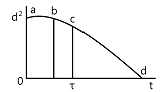
- a - b
- b - c
- c - d
- d
(정답률: 83%)
36. 예혼합연소의 특징에 대한 설명으로 옳은 것은?
- 역화의 위험성이 없다.
- 로(爐)의 체적이 커야 한다.
- 연소실부하율을 높게 얻을 수 있다.
- 화염대에 해당하는 두께는 10~100mm 정도로 두껍다.
(정답률: 72%)
37. 고체연료의 연소과정 중 화염이동속도에 대한 설명으로 옳은 것은?
- 발열량이 낮을수록 화염이동속도는 커진다.
- 석탄화도가 높을수록 화염이동속도는 커진다.
- 입자직경이 작을수록 화염이동속도는 커진다.
- 1차 공기온도가 높을수록 화염이동속도는 작아진다.
(정답률: 69%)
38. 20kW의 어떤 디젤 기관에서 마찰손실이 출력의 15%일 때 손실에 의해 발생되는 열량은 약 몇 kJ/s인가?
- 3
- 4
- 6
- 7
(정답률: 65%)
39. 30㎏ 중유의 고위 발열량이 90000kcal일 때 저위 발열량은 약 몇 kcal/㎏인가?(단, C : 30%, H : 10%, 수분 : 2%이다.)
- 1552
- 2448
- 3552
- 4944
(정답률: 65%)
40. 에너지 방출속도(energy release rate)에 대한 설명으로 틀린 것은?
- 화제와 관련하여 가장 중요한 값이다.
- 다른 요소와 비교할 때 간접적으로 화재의 크기와 손상가능성을 나타낸다.
- 화염높이와 밀접한 관계가 있다.
- 화재 주위의 복사열유속과 직접 관련된다.
(정답률: 63%)
3과목: 가스설비
41. LPG집단 공급시설에서 액화석유가스 저장탱크의 저장능력 계산 시 기준이 되는 것은?
- 0℃에서의 액비중을 기준으로 계산
- 20℃에서의 액비중을 기준으로 계산
- 40℃에서의 액비중을 기준으로 계산
- 상용온도에서의 액비중을 기준으로 계산
(정답률: 70%)
42. 일정압력 이하로 내려가면 가스 분출이 정지되는 구조의 안전밸브는?
- 스프링식
- 파열식
- 가용전식
- 박판식
(정답률: 82%)
43. 일반용 액화석유가스 압력조정기의 내압 성능에 대한 설명으로 옳은 것은?
- 입구 쪽 시험압력은 2MPa 이상으로 한다.
- 출구 쪽 시험압력은 0.2MPa 이상으로 한다.
- 2단 감압식 2차용조정기의 경우 에는 입구 쪽 시험압력을 0.8MPa 이상으로 한다.
- 2단 감압식 2차용조정기 및 자동절체식분리형조정기의 경우에는 출구 쪽 시험압력을 0.8MPa 이상으로 한다.
(정답률: 60%)
44. 가스배관에 대한 설명 중 옳은 것은?
- SDR21 이하의 PE배관은 0.25MPa 이상 0.4MPa 미만의 압력에 사용할 수 있다.
- 배관의 규격 중 관의 두께는 스케줄 번호로 표시하는데 스케줄수 40은 살두께가 두꺼운 관을 말하고, 160 이상은 살두께가 가는 관을 나타낸다.
- 강괴에 내재하는 수축공, 국부적으로 집합한 기포나 편식 등의 개재물이 압착되지 않고 층상의 균열로 남아 있어 강에 영향을 주는 현상을 라미네이션이라 한다.
- 재료가 일정온도 이하의 저온에서 하중을 변화시키지 않아도 시간의 경과함에 따라 변형이 일어나고 끝내 파탄에 이르는 것을 크리프 현상이라 하고 한계온도는 -20℃이하이다.
(정답률: 72%)
45. 고압식 액체산소 분리공정 순서로 옳은 것은?
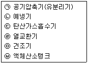
- ㉠ → ㉡ → ㉢ → ㉣ → ㉤ → ㉥
- ㉢ → ㉠ → ㉡ → ㉤ → ㉣ → ㉥
- ㉡ → ㉠ → ㉢ → ㉣ → ㉤ → ㉥
- ㉠ → ㉢ → ㉡ → ㉤ → ㉣ → ㉥
(정답률: 63%)
46. 도시가스 강관 파이프의 길이가 5m이고, 선팽창계수(α)가 0.000015(1/℃)일 때 온도가 20℃에서 70℃로 올라갔다면 늘어날 길이는?
- 2.74mm
- 3.75mm
- 4.78mm
- 5.76mm
(정답률: 74%)
47. 펌프 입구와 출구의 진공계 및 압력계의 바늘이 흔들리며 송출유량이 변하는 현상은?
- 공동현상
- 서징현상
- 수격현상
- 베이퍼록현상
(정답률: 73%)
48. 유량이 0.5m3/min인 축류펌프서 물을 흡수면보다 50m 높은 곳으로 양수하고자 한다. 축동력이 15PS소요되었다고 할 때 펌프의 효율은 약 몇 %인가?
- 32
- 37
- 42
- 47
(정답률: 73%)
49. 가스용기의 최고 충전압력이 14MPa이고 내용적이 50L인 수소용기의 저장능력은 약 얼마인가?
- 4m3
- 7m3
- 10m3
- 15m3
(정답률: 65%)
50. 입구압력이 0.07~1.56MPa이고, 조정압력이 2.3~3.3kPa인 액화석유가스 압력조정기의 종류는?
- 1단 감압식 저압조정기
- 1단 감압식 준저압조정기
- 자동절체식 분리형 조정기
- 자동절체식 일체형 저압조정기
(정답률: 75%)
51. 가스화 프로세스에서 발생하는 일산화탄소의 함량을 줄이기 위한 CO 변성반응을 옳게 나타낸 것은?
- CO＋3H2O ⇆ CH4＋H2O
- CO＋H2O ⇆ CO2＋H2
- 2CO ⇆ CO2＋C
- 2CO＋2H2 ⇆ CH4＋CO2
(정답률: 65%)
52. 보통 탄소강에서 여러 가지 목적으로 합금원소를 첨가한다. 다음 중 적열메짐을 방지하기 위하여 첨가하는 원소는?
- 망간
- 텅스텐
- 규소
- 니켈
(정답률: 69%)
53. 고압가스 이음매 없는 용기의 밸브 부착부 나사의 칫수 측정방법은?
- 링게이지로 측정한다.
- 평형수준기로 측정한다.
- 플러그게이지로 측정한다.
- 버니어캘리퍼스로 측정한다.
(정답률: 73%)
54. 나사 이음에 대한 설명으로 틀린 것은?
- 유니언 : 관과 관의 접합에 이용되며 분해가 쉽다.
- 부싱 : 관지름이 다른 접속부에 사용된다.
- 니플 : 관과 관의 접합에 사용되며 암나사로 되어 있다.
- 밴드 : 관의 완만한 굴곡에 이용된다.
(정답률: 74%)
55. 액화석유가스(LPG)를 용기 또는 소형저장탱크에 충전 시 기상부는 용기 내용적의 15%를 확보하도록 하고 있다. 다음 중 그 이유로서 가장 옳은 것은?
- 용기가 부식여유를 갖도록
- 액체상태의 유동성을 갖도록
- 충전된 액체상태의 부피의 양을 줄이도록
- 온도상승에 따른 부피팽창으로 인한 파열을 방지하기 위하여
(정답률: 88%)
56. 부식방지 방법에 대한 설명으로 틀린 것은?
- 금속을 피복한다.
- 선택배류기를 접속시킨다.
- 이종의 금속을 접촉시킨다.
- 금속표면의 불균일을 없앤다.
(정답률: 86%)
57. 다음 금속재료에 대한 설명으로 틀린 것은?
- 강에 P(인)의 함유량이 많으면 산율, 충격치는 저하된다.
- 18% Cr, 8% Ni을 함유한 강을 18-8 스테인리스강이라 한다.
- 금속가공 중에 생긴 잔류응력 제거에는 열처리를 한다.
- 구리와 주석의 합금은 황동이고, 구리와 아연의 합금은 청동이다.
(정답률: 84%)
58. 고압가스용 밸브에 대한 설명 중 틀린 것은?
- 고압밸브는 그 용도에 따라 스톱밸브, 감압밸브, 안전밸브, 체크밸브 등으로 구분된다.
- 가연성 가스인 브롬화메탄과 암모니아 용기밸브의 충전구는 오른나사이다.
- 암모니아 용기밸브는 동 및 동합금의 재료를 사용한다.
- 용기에는 용기 내 압력이 규정압력 이상으로 될 때 작동하는 안전밸브가 부착되어 있다.
(정답률: 77%)
59. 과류차단 안전기구가 부착된 것으로 배관과 호스 또는 배관과 커플러를 연결하는 구조의 콕은?
- 호스콕
- 퓨즈콕
- 상자콕
- 노즐콕
(정답률: 81%)
60. 토양 중에 금속부식을 시험편을 이용하여 실험하였다. 이에 대한 설명으로 틀린 것은?
- 전기저항이 낮은 토양 중의 부식속도는 빠르다.
- 배수기 불량한 점토 중의 부식속도는 빠르다.
- 염기성 세균이 번식하는 토양 중의 부식속도는 빠르다.
- 통기성이 좋은 토양 중의 부식속도는 점차 빨라진다.
(정답률: 81%)
4과목: 가스안전관리
61. 가스보일러가 가동 중인 아파트 7층 다용도실에서 세탁 중이던 주부가 세탁 30분후 머리가 아프다며 다용도실을 나온 후 실신하였다. 정밀조사 결과 상층으로 올라갈수록 CO의 농도가 높아짐을 알았다. 최우선 대책으로 옳은 것은?
- 다용도실의 환기 개선
- 공동배기구 시설 개선
- 도시가스의 누출 차단
- 가스보일러 본체 및 가스배관시설 개선
(정답률: 74%)
62. 차량에 고정된 탱크에 설치된 긴급차단 장치는 차량에 고정된 저장탱크나 이에 접속하는 배관외면의 온도가 얼마일 때 자동적으로 작동하도록 되어 있는가?
- 100℃
- 1⑤℃
- 110℃
- 120℃
(정답률: 72%)
63. 저장탱크에 의한 액화석유가스 저장소에서 지반조사 시 지반조사의 실시 기준은?
- 저장설비와 가스설비 외면으로부터 10m 내에서 2곳 이상 실시한다.
- 저장설비와 가스설비 외면으로부터 10m 내에서 3곳 이상 실시한다.
- 저장설비와 가스설비 외면으로부터 20m 내에서 2곳 이상 실시한다.
- 저장설비와 가스설비 외면으로 부터 20m 내에서 3곳 이상 실시한다.
(정답률: 67%)
64. 다음 중 특정설비의 범위에 해당되지 않는 것은?
- 조정기
- 저장탱크
- 안전밸브
- 긴급차단장치
(정답률: 67%)
65. 고압가스 용집용기 중 오목부에 내압을 받는 접시형 경판의 두께를 계산하고자 한다. 다음 계산식 중 어떤 계산식 이상의 두께로 하여야 하는가?(단, P는 최고충전압력의 수치(MPa), D는 중앙만 곡부 내면의 반지름(mm), W는 접시형 경판의 형상에 다른 계수, S는 재료의 허용응력 수치(N/mm2), η는 경관 중앙부이음매의 용접효율, C는 부식여유두께(mm)이다.)
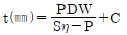
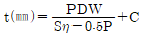
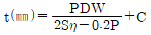
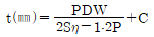
(정답률: 53%)
66. 도시가스용 압력조정기의 정의로 맞는 것은?
- 도시가스 정압기 이외에 설치되는 압력조정기로서 입구 쪽 구경이 50A이하이고 최대표시유량이 300Nm3/h 이하인 것을 말한다.
- 도시가스 정압기 이외에 설치되는 압력조정기로서 입구 쪽 구경이 50A이하이고 최대표시유량이 500Nm3/h 이하인 것을 말한다.
- 도시가스 정압기 이외에 설치되는 압력조정기로서 입구 쪽 구경이 100A이하이고 최대표시유량이 300Nm3/h 이하인 것을 말한다.
- 도시가스 정압기 이외에 설치되는 압력조정기로서 입구 쪽 구경이 100A이하이고 최대표시유량이 500Nm3/h 이하인 것을 말한다.
(정답률: 58%)
67. 액화석유가스의 누출을 감지할 수 있도록 냄새나는 물질을 섞어야 할 양으로 적당한 것은?
- 공기 중에 1백분의 1의 비율로 혼합되었을 때 그 사실을 알 수 있도록 섞는다.
- 공기 중에 1천분의 1의 비율로 혼합되었을 때 그 사실을 알 수 있도록 섞는다.
- 공기 중에 5천분의 1의 비율로 혼합되었을 때 그 사실을 알 수 있도록 섞는다.
- 공기 중에 1만분의 1의 비율로 혼합되었을 때 그 사실을 알 수 있도록 섞는다.
(정답률: 78%)
68. 일반도시가스사업자 시설의 정압기에 설치되는 안전밸브 분출부 크기 기준으로 옳은 것은?
- 정압기 입구 압력이 0.5MPa 이상인 것은 50A 이상
- 정압기 입구 압력에 관 없이 80A 이상
- 정압기 입구 압력이 0.5MPa 이상인 것으로서 설계유량이 1000m3 이상인 것은 32A 이상
- 정압기 입구 압력이 0.5MPa 이상인 것으로서 설계유량이 1000m3 미만인 것은 32A 이상
(정답률: 65%)
69. 산화에틸렌의 성질에 대한 설명으로 틀린 것은?
- 불연성이다.
- 무색의 가스 또는 액체이다.
- 분자량이 이산화탄소와 비슷하다.
- 충격 등에 의해 분해 폭발할 수 있다.
(정답률: 77%)
70. 다음 [보기]의 가스성질에 대한 설명 중 옳은 것을 모두 바르게 나열한 것은?
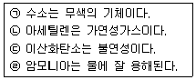
- ㉠, ㉡
- ㉡, ㉢
- ㉠, ㉣
- ㉠, ㉡, ㉢, ㉣
(정답률: 85%)
71. 고압가스 특정제조시설에 설치하는 일정규모 이상의 가연성가스의 저장탱크와 다른 가연성가스와의 사이가 두 저장탱크의 최대지름을 합산한 길이의 4분의 1이 0.5m인 경우 저장탱크와 다른 저장탱크와의 사이는 최소 몇 m 이상을 유지하여야 하는가?
- 0.5m
- 1m
- 1.5m
- 2m
(정답률: 74%)
72. 고압가스 용기를 취급 또는 보관하는 때에는 위해요소가 발생하지 않도록 관리하여야 한다. 용기보관장소에 충전용기를 보관하는 방법으로 옳지 않은 것은?
- 충전용기와 잔가스용기는 각각 구분하여 용기 보관장소에 놓는다.
- 용기보관장소에는 계량기 등 작업에 필요한 물건 외에는 두지 아니한다.
- 용기보관장소 주위 2m이내에는 화기 또는 인화성물질이나 발화성물질을 두지 아니한다.
- 충전용기는 항상 60℃ 이하의 온도를 유지하고, 직사광선을 받지 않도록 조치한다.
(정답률: 86%)
73. 독성가스에 대한 설명으로 틀린 것은?
- 암모니아 등의 독성가스 저장탱크에는 가스충전량이 그 저장탱크 내용적의 90%를 초과하는 것을 방지하는 장치를 설치한다.
- 독성가스의 제조시설에는 그 가스가 누출 시 흡수 또는 중화할 수 있는 장치를 설치한다.
- 독성가스의 제조시설에는 풍향계를 설치한다.
- 암모니아와 브롬화메탄 등의 독성가스의 제조시설의 전기설비는 방폭성능을 가지는 구조로 한다.
(정답률: 70%)
74. 일정 규모 이상의 고압가스 저장탱크 및 압력용기를 설치하는 경우 내진설계를 하여야 한다. 다음 중 내진설계를 하지 않아도 되는 경우는?
- 저장능력 100톤인 산소저장탱크
- 저장능력 1000m3인 수소저장탱크
- 저장능력 3톤인 암모니아저장탱크
- 증류탑으로서의 높이 10m의 압력용기
(정답률: 64%)
75. 고압가스안전관리법상 전문교육의 교육대상자가 아닌 자는?
- 안전관리원
- 운반차량운전자
- 검사기관의 기술인력
- 특정고압가스사용신고시설의 안전관리책임자
(정답률: 81%)
76. 고압가스 운반기준에 대한 설명으로 틀린 것은?
- 운반 중 충천용기는 항상 40도 이하를 유지한다.
- 가연성가스와 산소는 동일차량에 적재해서는 안된다.
- 충전용기와 휘발유는 동일차량에 적재해서는 안된다.
- 납붙임용기에 고압가스를 충전하여 운반시에는 주의사항 등을 기재한 포장상자에 넣어서 운반한다.
(정답률: 62%)
77. 독성고압가스의 배관 중 2중관의 외층관 내경은 내층관 외경의 몇 배 이상을 표준으로 하는가?
- 1.2배
- 1.5배
- 2.0배
- 2.5배
(정답률: 52%)
78. 액화가스의 정의에 대하여 바르게 설명한 것은?
- 일정한 압력으로 압축되어 있는 것이다.
- 대기압에서의 비점이 섭씨 0도 이하인 것이다.
- 대기압에서의 비점이 상용의 온도 이상인 것이다.
- 가압, 냉각 등의 방법으로 액체상태로 되어 있는 것이다.
(정답률: 78%)
79. 가스안전사고의 원인을 정확하게 분석하여야 하는 이유로서 가장 타당한 것은?
- 산재보험금 처리
- 사고의 책임소재 명확화
- 부당한 보상금 지급 방지
- 사고에 대한 정확한 예방대책 수립
(정답률: 88%)
80. 액화가스를 충전받기 위한 차량은 지상에 설치된 저장탱크 외면으로부터 몇m 이상 떨어져 정지하여야 하는가?
- 2m
- 3m
- 5m
- 8m
(정답률: 67%)
5과목: 가스계측기기
81. 가스검지 시험지와 검지가스와의 연결이 바르게 된 것은?
- KI 전분지 : CO
- 리트머스지 : C2H2
- 하리슨시약 : COCl2
- 염화제일동 착염지 : 알칼리성 가스
(정답률: 76%)
82. 열전대온도계는 2종류의 금속선을 접속하여 하나의 회로를 만들어 2개의 접점에 온도차를 부여하면 회로에 접점의 온도에 거의 비례한 전류가 흐르는 것을 이용한 것이다. 이때 응용된 원리로서 옳은 것은?
- 측온체의 발열현상
- 제백효과에 의한 열전기력
- 두 금속의 열전도도의 차이
- 키르히호프의 전류법칙에 의한 저항강하
(정답률: 76%)
83. 막식 가스미터의 감도유량( ㉠ )과 일반 가정용 LP 가스미터의 감도유량( ㉡ )의 값이 바르게 나열된 것은?
- ㉠ 3L/h 이상, ㉡ 15L/h 이상
- ㉠ 15L/h 이상, ㉡ 3L/h 이상
- ㉠ 3L/h 이하, ㉡ 15L/h 이하
- ㉠ 15L/h 이하, ㉡ 3L/h 이하
(정답률: 54%)
84. 기체크로마토그래피(Gas Chromatography)에서 캐리어가스 유량이 5mL/s이고 기록지 속도가 3mm/s일 때 어떤 시료가스를 주입하니 지속용량이 250mL이었다. 이때 주입점에서 성분의 피크까지 거리는 약 몇 mm인가?
- 50
- 100
- 150
- 200
(정답률: 70%)
85. 가스분석을 위하여 햄펠법으로 분석할 경우 흡수액이 KOH30g/H2O 100mL인 가스는?
- CO2
- CmHn
- O2
- CO
(정답률: 74%)
86. 다음 중 액주식 압력계가 아닌 것은?
- 경사관식
- 벨로우즈식
- 환상천평식
- U자관식
(정답률: 58%)
87. 가스크로마토그래피에 의한 분석방법은 어떤 성질을 이용한 것인가?
- 비열의 차이
- 비중의 차이
- 연소성의 차이
- 이동 속도의 차이
(정답률: 76%)
88. 피스톤형 게이지로서 다른 압력계의 교정 또는 검정용 표준기로 사용되는 압력계는?
- 분동식 압력계
- 부르동관식 압력계
- 벨로우즈식 압력계
- 다이어프램식 압력계
(정답률: 60%)
89. 독성가스나 가연성가스 저장소에서 가스누출로 인한 폭발 및 가스중독을 방지하기 위하여 현장에서 누출여부를 확인하는 방법으로 가장 거리가 먼 것은?
- 검지관법
- 시험지법
- 가연성가스검출기법
- 가스마토그래피법
(정답률: 75%)
90. 가스미터는 계산된 주기체적 값과 가스미터에 지시된 공청 주기체적 값 간의 차이가 기준조건에서 공청 주기체적 값의 얼마를 초과해서는 아니 되는가?
- 1%
- 2%
- 3%
- 5%
(정답률: 52%)
91. 고온, 고압의 액체나 고점도의 부식성액체 저장탱크에 가장 적합한 간접식 액면계는?
- 유리관식
- 방사선식
- 플로트식
- 검척식
(정답률: 75%)
92. 루트식 가스미터의 특징에 해당되는 것은?
- 개량이 정확하다.
- 설치공간이 커진다.
- 사용 중 수위 조절이 필요하다.
- 소유량에는 부동의 우려가 있다.
(정답률: 58%)
93. 직각 3각 웨어(weir)를 사용하여 물의 유량을 측정하였다. 웨어를 통과하는 물의높이를 H, 유량계수를 k 라고 했을 때 부피유량 Q를 구하는 식은?
- Q＝kH
- Q＝kH1/2
- Q＝kH3/2
- Q＝kH5/2
(정답률: 49%)
94. 압력 30atm, 온도50℃, 부피 1m3의 질소를 -50℃로 냉각시켰더니 그 부피가 0.32m3이 되었다. 냉각 전, 후의 압축계수가 각각 1.001, 0.930일 때 냉각 후의 압력은 약 몇 atm이 되는가?
- 60
- 70
- 80
- 90
(정답률: 42%)
95. 속도 변화에 의하여 생기는 압력차를 이용하는 유량계는?
- 벤투리미터
- 아누바 유량계
- 로터미터
- 오벌 유량계
(정답률: 73%)
96. 서미스터(thermistor)에 대한 설명으로 옳지 않은 것은?
- 측정범위는 약 -100~300℃이다.
- 수분을 흡수하면 오차가 발생한다.
- 반도체를 이용하여 온도변화에 따른 저항변화를 온도측정에 이용한다.
- 감도가 낮고 온도변화가 큰 곳의 측정에 주로 이용된다.
(정답률: 64%)
97. 막식가스미터에서는 가스는 통과하지만 미터의 지침이 작동하지 않는 고장이 일어났다. 예상되는 원인으로 가장 거리가 먼 것은?
- 계량막의 파손
- 밸브의 탈락
- 회전장치 부분의 고장
- 지시장치 톱니바퀴의 불량
(정답률: 52%)
98. 캐스케이드 제어에 대한 설명으로 옳은 것은?
- 비율제어라고도 한다.
- 단일 루프제어에 비해 내란의 영향이 없으나 계전체의 지연이 크게 된다.
- 2개의 제어계를 조합하여 제어량을 1차 조절계로 측정하고 그 조작 출력으로 2차 조절계의 목표치를 설정한다.
- 물체의 위치, 방위, 자세 등의 기계적 변위를 제어량으로 하는 제어계이다.
(정답률: 84%)
99. 공기의 유속을 피토관으로 측정하였을 때 차압이 60mmHgH2O이었다. 이때 유속(m/s)은?(단, 피토관 계수 1, 공기의 비중량 1.2㎏f/m3이다.)
- 0.⑤3
- 31.3
- 5.3
- 53
(정답률: 52%)
100. 통상적으로 사용하는 열전대의 종류가 아닌 것은?
- 크로멜 - 백금
- 철 - 콘스탄탄
- 구리 - 콘스탄탄
- 백금 - 백금·로듐
(정답률: 73%)